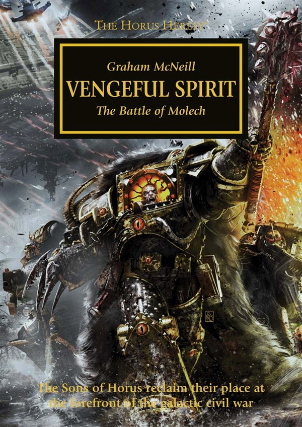

VENGEFUL SPIRIT

Author: Graham McNeill
Format: Novel
Horus leads the Sons of Horus to the fortified Knight world of Molech. House Devine and the Imperial Army stand against him, but the Warmaster’s reason for choosing this world remains hidden.
Introduction reviewed against Black Library’s description on 2026-09-27. The publisher page may contain spoilers.
Publication facts: publisher source, checked 2026-09-26.
Open this work in the interactive Archive to track reading progress and explore related works.